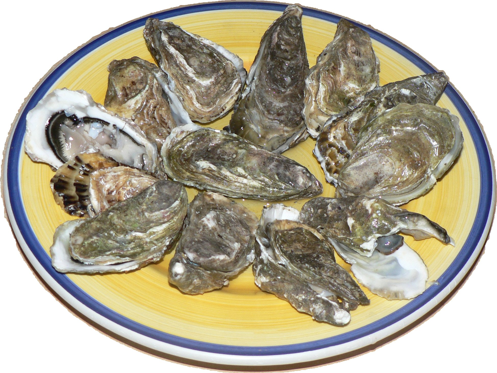
REGAL ORO
Ireland
Delicate, creamy and distinctly elegant.
Our Oysters
Oil & Bread
Multigrain · Sourdough · Made in house · Sicilian ingredients
Val di Mazara DOP · EVO · Cerasuola · Biancolilla · Nocellara del Belice
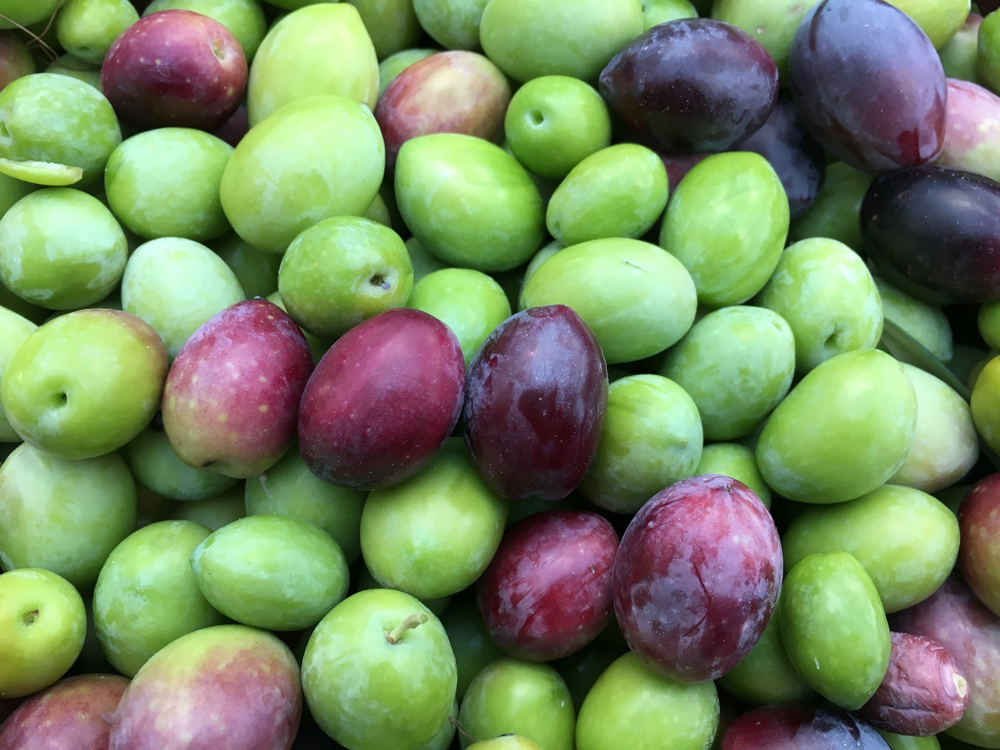
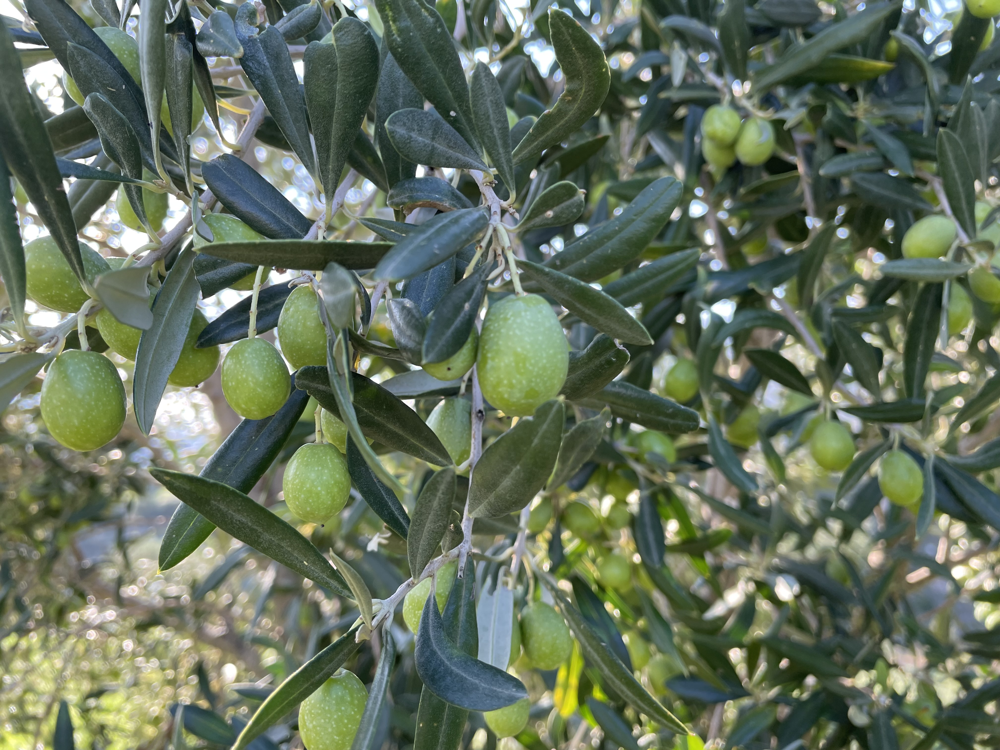
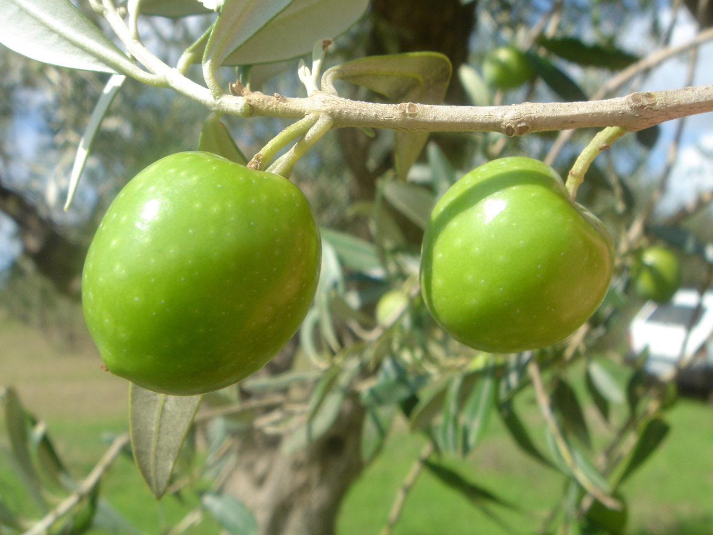
Meat
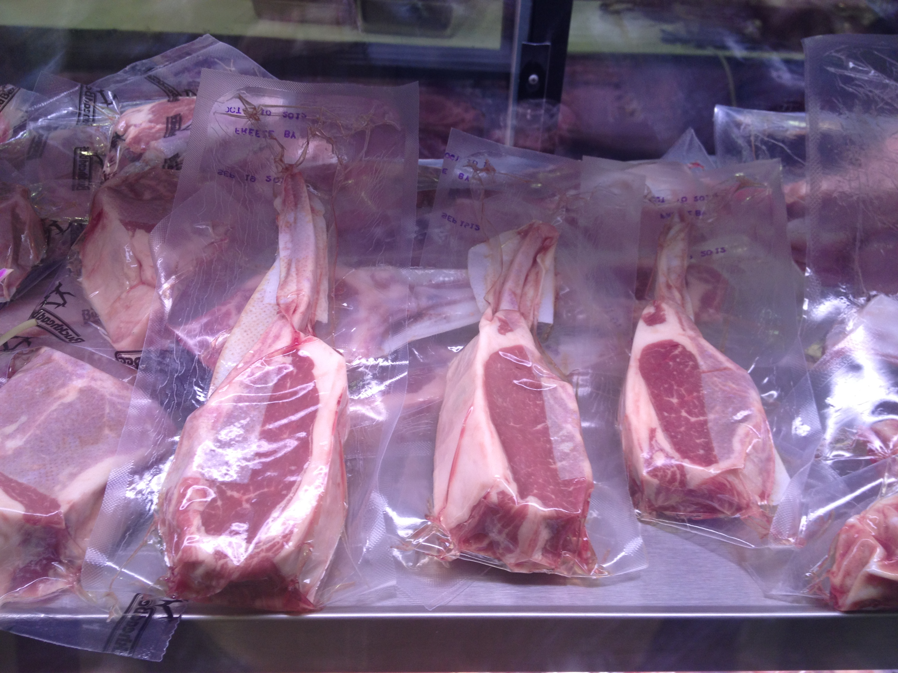
Australian Wagyu Tomahawk
Australia · Rib section
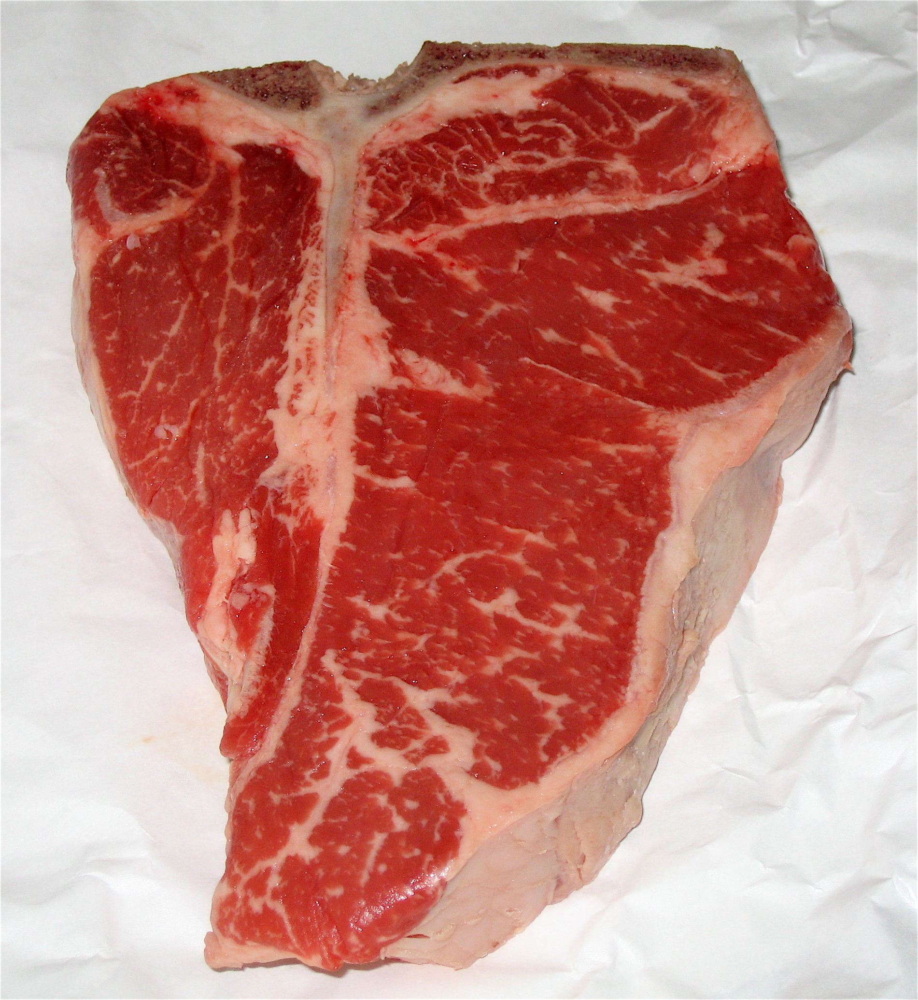
Piedmontese Beef T-Bone Steak
Piedmont, Italy · Short loin
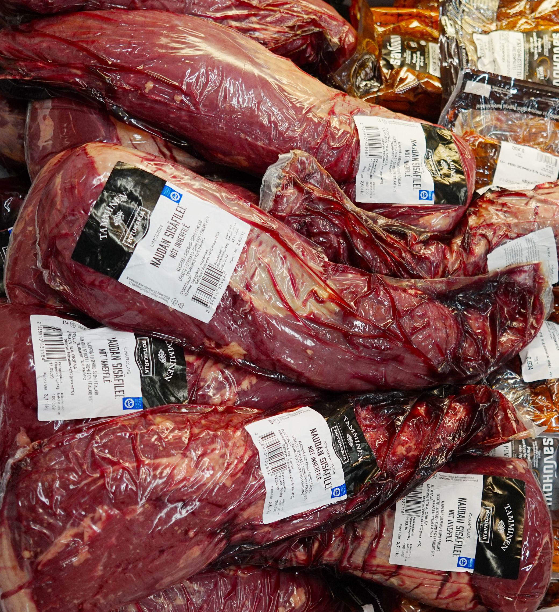
Manzetta Prussiana Beef
Poland · Sirloin section
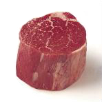
Argentinian Beef Fillet
Argentina · Tenderloin
Seafood
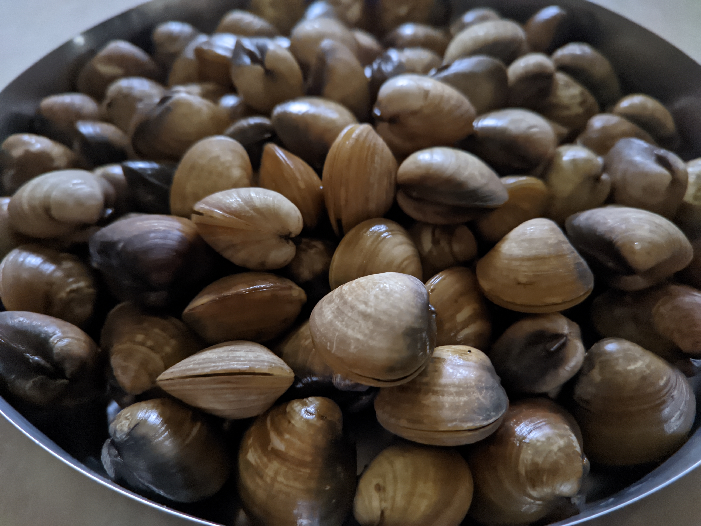
Mediterranean Sea
Fresh clam with a clean, delicate ocean flavour.
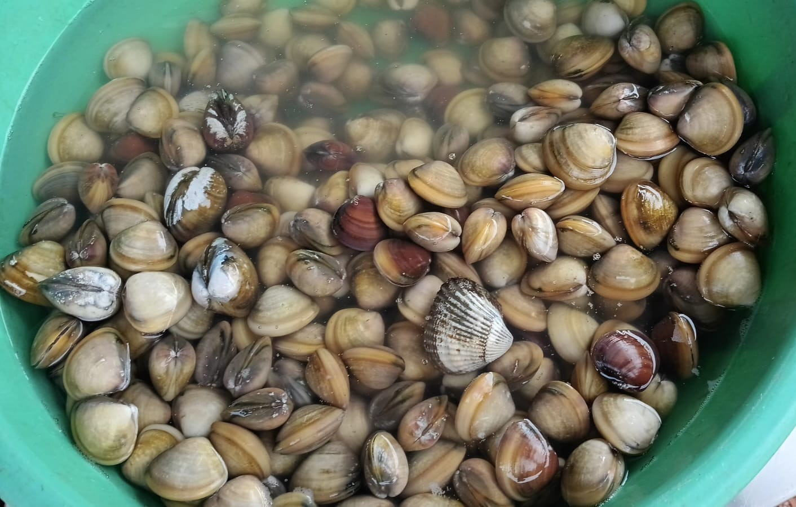
Italy
Rare sea truffle clam with a deep, mineral salinity.
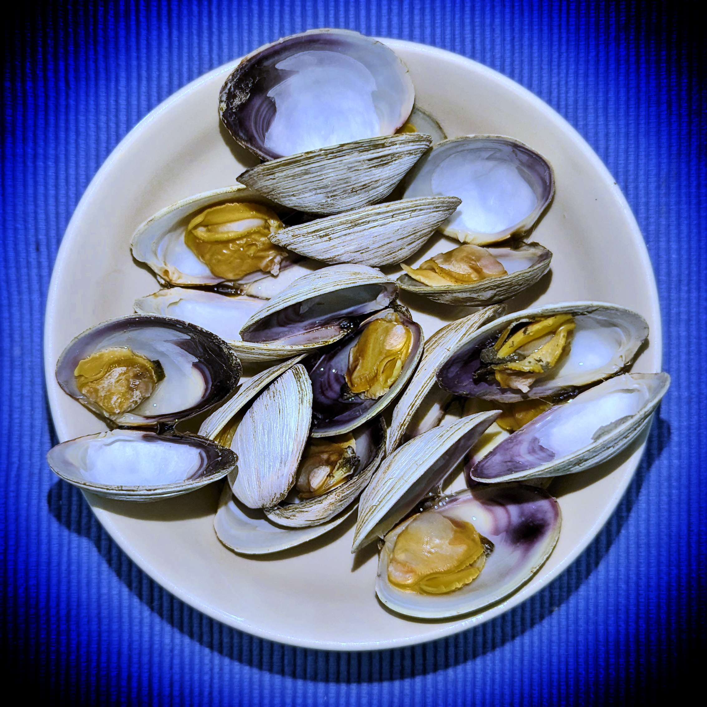
Adriatic Sea
Silky smooth clam with a bright, briny finish.
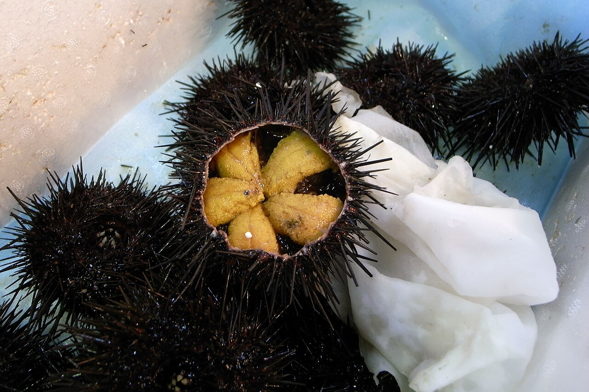
Sicily, Italy
Delicate sea urchin with a rich, creamy texture.
Origin map
Service
Responsible: Hostess / Supervisor
Responsible: Chef de Rang
To be defined: How long to wait before taking the order.
Responsible: Commis
Reference: See the technical sheet.
Raw dishes: Provide a show plate and napkin for all sizes. Remove the pine cone, if necessary. For sharing, bring sharing plates and prepare the clips.
Seafood platter: Bring hand towels for guests to use at the end of the meal.
Caviar: Provide a butter knife for the whole table. Always serve with an ivory spoon.
Fish sold by weight: Two staff members serve the fish: one portions it and the other serves it.
Meat: See the specifications below.
Menu
“Sea bass with shallot cream, Cardoncelli mushrooms and rosemary oil.”
 Recommended cutlery: Fish fork + fish knife
Recommended cutlery: Fish fork + fish knife
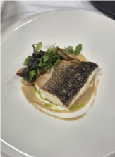
“Meagre with fennel cream, plum and potatoes.”
Recommended cutlery: Fish fork + fish knife
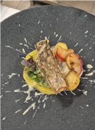
“Tuna with cauliflower, onion and liquorice.”
Recommended cutlery: Fish fork + fish knife
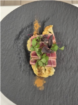
“Salmon with crème fraîche, chives and caviar.”
Recommended cutlery: Fish fork + fish knife
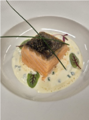